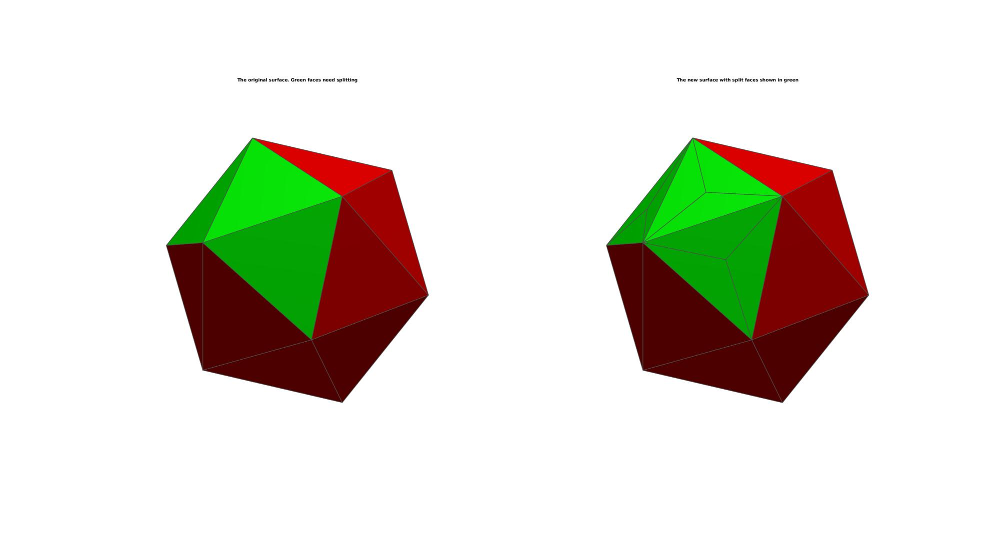
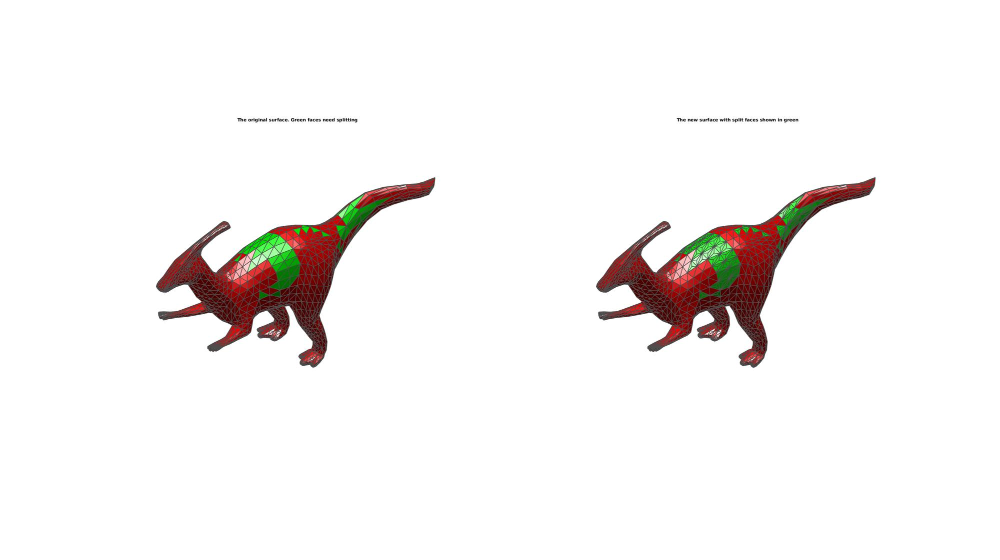

subTriCentre
Below is a demonstration of the features of the subTriCentre function
Contents
Syntax
[Fn,Vn]=subTriCentre(F,V,L);
Description
The subTriCentre function splits the faces defined by L up into three by introducing a central node.
Examples
clear; close all; clc;
Plot settings
fontSize=10; faceAlpha=1; edgeColor=0.3*ones(1,3); edgeWidth=1.5;
Example: Splitting a selection of triangles
Building example patch data
[V,F]=platonic_solid(4,1);
Create logic for faces to split
L=false(size(F,1),1);
L(6:8)=1; %e.g. the first 3 faces
Splitting selected triangles
[Fn,Vn]=subTriCentre(F,V,L);
Plotting results
C=[ones(size(F,1),1) zeros(size(F,1),1) zeros(size(F,1),1)]; C(L,1)=0; C(L,2)=1; hf=cFigure; subplot(1,2,1); title('The original surface. Green faces need splitting','FontSize',fontSize); xlabel('X','FontSize',fontSize); ylabel('Y','FontSize',fontSize); zlabel('Z','FontSize',fontSize); hp=patch('Faces',F,'Vertices',V,'FaceColor','flat','FaceVertexCData',C,'FaceAlpha',faceAlpha,'lineWidth',edgeWidth,'edgeColor',edgeColor); camlight headlight; set(gca,'FontSize',fontSize); view(3); axis tight; axis equal; axis off; drawnow; C=[ones(size(Fn,1),1) zeros(size(Fn,1),1) zeros(size(Fn,1),1)]; C(end-(3*nnz(L)-1):end,1)=0; C(end-(3*nnz(L)-1):end,2)=1; subplot(1,2,2); title('The new surface with split faces shown in green','FontSize',fontSize); xlabel('X','FontSize',fontSize); ylabel('Y','FontSize',fontSize); zlabel('Z','FontSize',fontSize); hp=patch('Faces',Fn,'Vertices',Vn,'FaceColor','flat','FaceVertexCData',C,'FaceAlpha',faceAlpha,'lineWidth',edgeWidth,'edgeColor',edgeColor); % [hp]=patchNormPlot(F,V,0.25); camlight headlight; set(gca,'FontSize',fontSize); view(3); axis tight; axis equal; axis off; drawnow;
EXAMPLE SURFACE AREA BASED RESAMPLING
Load example patch data
[F,V]=parasaurolophus;
Split large triangles according to area threshold
[A]=patch_area(F,V); % Calculate triangle surface areas max_A=mean(A(:))+2*std(A(:)); %Set a max treshold %Loop until all are within treshold An=A; Vn=V; Fn=F; Ln=false(size(Fn,1),1); while 1 L=An>max_A; Ln(L)=1; if nnz(L)>0 [Fn,Vn]=subTriCentre(Fn,Vn,L); [An]=patch_area(Fn,Vn); else break end end
Plotting results
C=[ones(size(F,1),1) zeros(size(F,1),1) zeros(size(F,1),1)]; C(Ln,1)=0; C(Ln,2)=1; hf=cFigure; subplot(1,2,1); title('The original surface. Green faces need splitting','FontSize',fontSize); xlabel('X','FontSize',fontSize); ylabel('Y','FontSize',fontSize); zlabel('Z','FontSize',fontSize); hp=patch('Faces',F,'Vertices',V,'FaceColor','flat','FaceVertexCData',C,'FaceAlpha',faceAlpha,'lineWidth',edgeWidth,'edgeColor',edgeColor); camlight headlight; set(gca,'FontSize',fontSize); view(3); axis tight; axis equal; axis off; drawnow; C=[ones(size(Fn,1),1) zeros(size(Fn,1),1) zeros(size(Fn,1),1)]; C(end-(3*nnz(Ln)-1):end,1)=0; C(end-(3*nnz(Ln)-1):end,2)=1; subplot(1,2,2); title('The new surface with split faces shown in green','FontSize',fontSize); xlabel('X','FontSize',fontSize); ylabel('Y','FontSize',fontSize); zlabel('Z','FontSize',fontSize); hp=patch('Faces',Fn,'Vertices',Vn,'FaceColor','flat','FaceVertexCData',C,'FaceAlpha',faceAlpha,'lineWidth',edgeWidth,'edgeColor',edgeColor); % [hp]=patchNormPlot(F,V,0.25); camlight headlight; set(gca,'FontSize',fontSize); view(3); axis tight; axis equal; axis off; drawnow;
Calculate new surface areas
[An]=patch_area(Fn,Vn);
Plotting model
hf=cFigure; subplot(1,2,1); title('The original surface and its surface area distribution','FontSize',fontSize); xlabel('X','FontSize',fontSize); ylabel('Y','FontSize',fontSize); zlabel('Z','FontSize',fontSize); hp=patch('Faces',F,'Vertices',V,'FaceColor','flat','CData',A,'FaceAlpha',faceAlpha,'edgeColor','none'); colormap jet; colorbar; caxis([0 max(A(:))]); camlight headlight; set(gca,'FontSize',fontSize); view(3); axis tight; axis equal; axis off; drawnow; subplot(1,2,2); title('The new model and surface area distribution','FontSize',fontSize); xlabel('X','FontSize',fontSize); ylabel('Y','FontSize',fontSize); zlabel('Z','FontSize',fontSize); hp=patch('Faces',Fn,'Vertices',Vn,'FaceColor','flat','CData',An,'FaceAlpha',faceAlpha,'edgeColor','none'); colormap jet; colorbar; caxis([0 max(A(:))]); camlight headlight; set(gca,'FontSize',fontSize); view(3); axis tight; axis equal; axis off; drawnow;


GIBBON www.gibboncode.org
Kevin Mattheus Moerman, gibbon.toolbox@gmail.com
GIBBON footer text
License: https://github.com/gibbonCode/GIBBON/blob/master/LICENSE
GIBBON: The Geometry and Image-based Bioengineering add-On. A toolbox for image segmentation, image-based modeling, meshing, and finite element analysis.
Copyright (C) 2019 Kevin Mattheus Moerman
This program is free software: you can redistribute it and/or modify it under the terms of the GNU General Public License as published by the Free Software Foundation, either version 3 of the License, or (at your option) any later version.
This program is distributed in the hope that it will be useful, but WITHOUT ANY WARRANTY; without even the implied warranty of MERCHANTABILITY or FITNESS FOR A PARTICULAR PURPOSE. See the GNU General Public License for more details.
You should have received a copy of the GNU General Public License along with this program. If not, see http://www.gnu.org/licenses/.